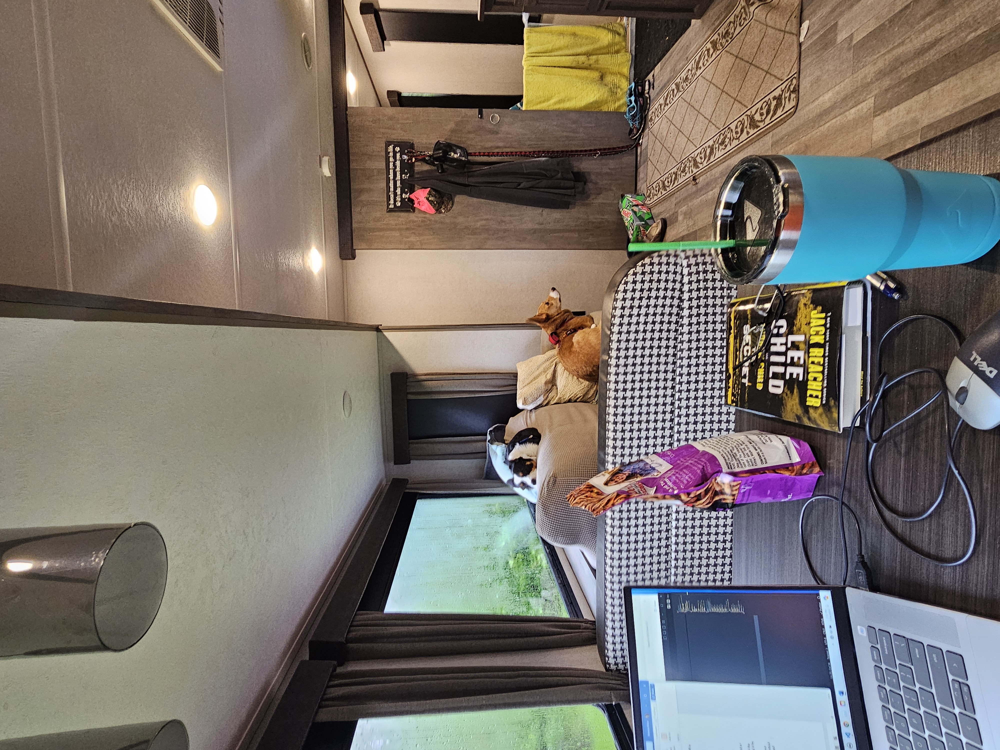
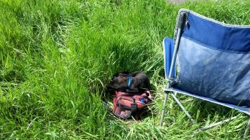
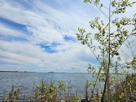

I celebrated a milestone last month at my day job. I got my "Ten Years of Service" certificate from the University. Technically I've been there twelve years, but they don't count those first two years because I was classified as a part-time, temporary employee.
Twelve years ago, Hubby's rotating shift job was burning him out. He wanted to try some other jobs that had better hours at his workplace, and, of course, those jobs paid less. So I took a part-time job in the clean room at the vivarium to make up some of the wage difference.
Then I helped out a few times when staff was short, and I fell in love with the mice. That made me decide to leave the clean side job and become a full-time animal tech. I worked as an animal tech for about eight years.
But, as often happens, things change. The job added an "on call" component, and I hate that. I'm one of those "when I leave work, I LEAVE work" people. I made my feelings about it clear, and waited a bit to see if anyone was going to resolve the problem, but they didn't. So I had to find another job.
Fortunately, a position as the Research Compliance Coordinator opened up at the university, and I was hired for that. I still get to work within the animal care program, so, in a way, I'm still taking care of my mice, just not hands-on anymore.
So from that little part-time job has grown a ten-year (so far) career. And I have no intention of retiring anytime soon, so we will see how many "X Years of Service" certificates I end up earning!
And Hubby's search for a position within his company with better hours? It worked out in the end, but not the way you might think. He tried several different jobs and didn't like any of them. So he went back to his rotating shift job, which was where his heart was. Luckily, the dropped the rotating part of the job not long after. They were having problems getting those positions filled (besides hubby's) and thought the rotating might have something to do with it (go figure).

This month's writing update is that there has been a ton of writing going on this year, and I just didn't realize it.
Granted, a lot of the writing has been technical writing. I've been creating a lot of tip sheets at work and am currently working on a big user manual for the protocol process. But I've also done a lot of opinion pieces! They tend to start out as just me sitting down to journal, but they quickly turn into 1500 word op-ed pieces like you'd see in the Times. Come to think of it, maybe I need to start trying to submit some of these.
So while there is little-to-no horror writing going on, there IS a lot of writing going on.
Speaking of which . . . I normally post a goals check-in this time of year, but I'm not doing that this year. The goals are how they always are: hit and miss. Some months I do great, and then months go by without any progress. So I'm in a “eff goals” mood and not going to bother. We will see how I feel about goals in December.
My reading has fallen by the wayside lately, too, at least for the dead-tree books I've been reading.
I have been listening to an audiobook,
Paganism: An Introduction to Earth-Centered Religions by Joyce and River Higginbotham.
Disclaimer required: any links to or pictures of books are affiliate links, and if you click on them and buy the book, Amazon gives me a teeny-tiny kickback. Amazon gets upset if you forget mention that. Like people don't know what affiliate links are? I think this has been widely known since 1996 when we all had GeoCities websites. Anyway....
On a related note, the cover of this book is a good reason to not use stock templates. Here are two audiobooks I recently purchased.
As you can see, they both used the same cover template and then just customized it a bit from there. It must have something to do with Audible or audio formats, though, because both "books" have different covers in paperback. I have no idea why, though, as I've never published a book and had it converted to audio format.
I'm not a fan of too-similar covers, generally, because I often recognize a book by it's cover rather than its title. It's not as big of a deal with audiobooks, though, since the Audible app does keep track of what you listen to, so there's little to no risk of me buying a book I've already listened to. Believe me, it's happened with dead tree books.
Since I'm not taking a university course over the summer, I've been focusing on some of my other independent-learning projects.
I'm still working on my Udemy HTML course and studying spanish. I've also added in a "studying paganism" component (hence the books above). So I've got five little notebooks on the corner of my desk that I work in and take with me when we camp:
- Spanish
- HTML notes
- Pagan notes
- Journal
- Writing
Some days, I just work in one. Some days, I work in all of them. I just shift between each one as I get bored. Not only is it a good way to spend my time more wisely (instead of scrolling through my phone or playing on my apps), it's also a good way to finally start using up some of these notebooks I've been hoarding for years.
Seriously, what is with us writers? Almost every writer I know either has a hoard of notebooks or they have "special notebooks" that they've bought but are saving and never use. I'm firmly in the "every year, buy them by the case from Walmart during school supply season."
And to clarify the difference between "Journal" and "Writing," "Writing" is where I do my typical kind of fiction writing: story ideas, scenes, etc.
"Journaling" is actually a class I'm also taking at Udemy. It has exercises and such, so I keep a journal notebook for that class separate from my "usual" writing.
With all this going on, plus the journaling/essaying and summer-related house stuff, it was the art's turn to fall off the schedule. I'm pretty sure I haven't painted in almost a month. I think the last time I painted was the night of my final, when I was trying to de-stress!
I'm hoping that camping season will give me more opportunities to pick the art back up.
This month's playlist. The ten songs I'm listening to on repeat.
Circling back to "maybe camping will give me more time to art," the first camping trip of the year is this month's rant.
"Camping Opener" is usually the Friday leading up to Memorial Day Monday. This year, it rained all day opening day. Not thunderstorms, just a constant pouring rain. And 45 degrees with a 40 mph wind.
By 5 pm, the temperature was 34 degrees and the wind chill was 20. The rain turned to freezing rain, then snow. We had the heater AND the fireplace going! At Metigoshe, a park north of us, they got 4+ inches of snow for the camping opener.
The dogs were all bummed because we were trapped inside. Murphy was so bummed he actually started watching PBS.

I was bummed because the internet (cell service) was even more horrible than usual, and I had forgotten to download my Udemy classes, lol.
I could have taken the opportunity to paint, but there's just something about being so soggy and cold that I just didn't even want to. I went through more pairs of socks that weekend than I ever did on any week-long camping trips! I hate soggy feet.
Thankfully, that was the only day that required ranting about. The next couple of days were temperate and comfortable. We were even able to get some fishing in.
We started out fishing the road to the campground, which has always been a good spot. However, nothing was biting, and we discovered that our rock-hopping abilities are a little rusty. Many of the roads have a wide strip of bowling-ball-ish size rocks put down to stop erosion. They are wobbly and dangerous to walk on, and even I had issues. But hubby really struggled because of his bad ankle. So we decided that we would try fishing again the next day, but try a different spot.
We haven't been fishing in several years, and we weren't even sure if we could find some of our favorite backroad spots anymore. Hubby was skeptical, and even disagreed about the turns I said to take a few times, but guess who was right and remembered every single spot!
The sad part, that we hadn't realized until we started looking for the spots, is how much Roscoe was a part of most of them! We have, "the spot where Roscoe fell asleep on my tacklebox," "the spot where Roscoe ripped all the belt loops off my pants," "the spot where we grilled hot dogs for Roscoe while we were fishing" . . . He really was a big part of our fishing trips back in the day.

Though it was sad at first, we've decided to keep referring to the spots that way, in honor of Roscoe's memory.
The water was down too much at "spot where Roscoe fell asleep on my tacklebox" and "spot where we grilled hot dogs for Roscoe," so we fished at "spot where Roscoe broke all my belt loops." Even at that spot, though, we had to fish in a slightly different location (farther down the road) since the lake is way down. Instead of the road disappearing into the lake, it is out of the lake and you can drive it all the way across the lake now (though it still has "road closed" signs you have to drive around). We were there about two hours and caught five small-ish Northern Pike. Not terrible, but not as good as the fishing usually is.
In spite of the lackluster fishing, it was great to sit there beside the lake. We sill definitely be doing it again. Next time, I'm bringing my "Writing" notebook, though!

That's it for this month. Until next month, Stay Spooky, my friends!
~~Here be monsters . . . and corgis.~~